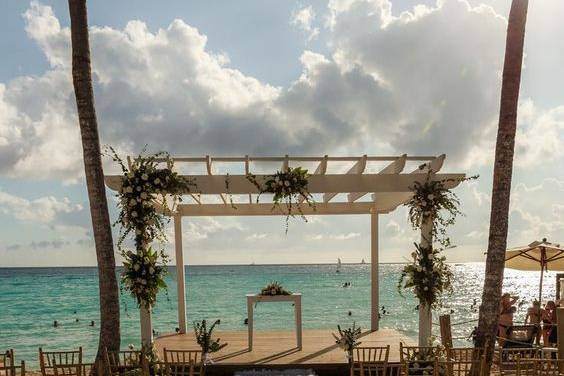
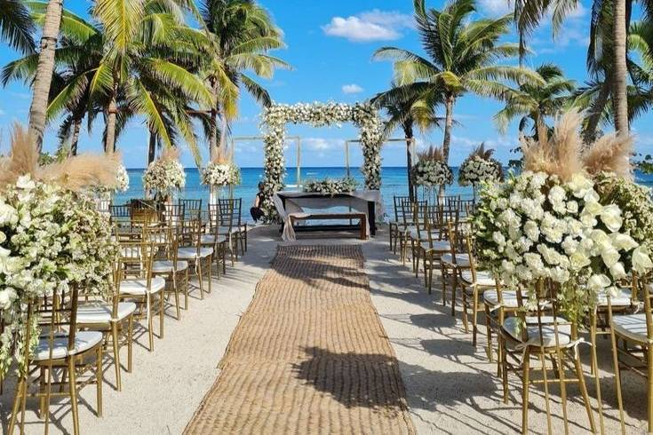

Nossos Pacotes de Viagens
 |
Pacote Cultural - História VivaEmbarque numa jornada inesquecível pelas maiores riquezas históricas e arquitetónicas do mundo. Este pacote foi feito para quem deseja explorar monumentos antigos, visitar museus de renome internacional e vivenciar de perto a cultura local, acompanhado pelos melhores guias especializados que dão vida ao passado. Preço: Sob consulta |
 |
Pacote Litoral - Paraísos TropicaisDesfrute de praias paradisíacas de areia branca e águas cristalinas. Este pacote oferece uma incrível visão de mar com um horizonte infinito, perfeita para quem deseja relaxar ao som das ondas e contemplar o pôr do sol mais bonito do litoral. Preço: Sob consulta |